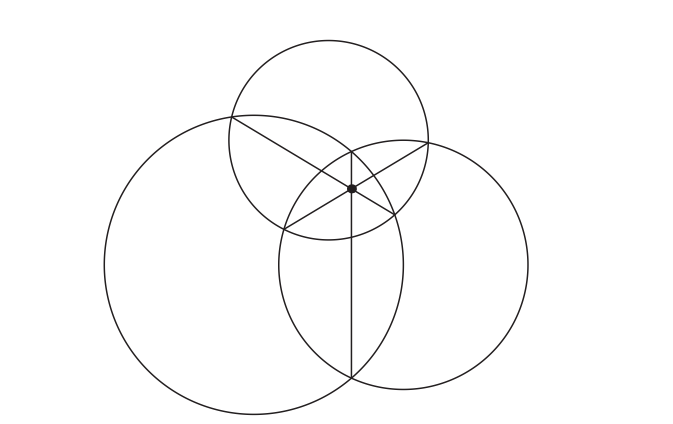

Тойрог (5/29)
Цэгийн Зэрэг
Тодорхойлолт
Бид \(P\) цэгийн \(\omega\) тойргийн хувьд харгалзах зэргийг дараах байдлаар тодорхойлно: \[ \mathrm{Pow}_\omega(P) = OP^2 - r^2 \] Энэ утга нь сөрөг байж болох ба тэмдэг нь \(P\) цэг тойргийн дотор эсвэл гадна оршиж буй эсэхийг илэрхийлнэ.
Теорем (Цэгийн Зэрэг)
Тойрог \(\omega\) болон дурын \(P\) цэгийг авч үзье.
\(\mathrm{Pow}\omega(P)\) утга нь эерэг, тэг, эсвэл сөрөг байх ба энэ нь \(P\) цэгийн \(\omega\) тойргийн гадна, дээр, эсвэл дотор оршихоос хамаарна.
Хэрэв \(ℓ\) нь \(P\) цэгээр дайрч \(\omega\) тойргийг \(X\), \(Y\) гэсэн хоёр ялгаатай цэг дээр огтолж байвал \[ PX \cdot PY = |\mathrm{Pow_{\omega}}(P)| \]
Хэрэв \(P\) нь \(\omega\)-гийн гадна оршиж, \(PA\) нь \(\omega\)-г \(A\) цэгт шүргэж байвал \[ PA^2 = \mathrm{Pow}_\omega(P) \]
Теорем (Цэгийн Зэргийн Урвуу)
Хавтгай дээр орших \(A\), \(B\), \(X\), \(Y\) гэсэн дөрвөн ялгаатай цэгийг авч үзье. \(AB\) болон \(XY\) шулуунууд \(P\) цэг дээр огтлолцдог гэж үзье. Хэрэв \(P\) цэг \(AB\) болон \(XY\) хэрчмүүдийн аль алинд нь оршдог эсвэл огт аль алинд нь оршдоггүй бол, мөн \(PA \cdot PB = PX \cdot PY\) бол \(A\), \(B\), \(X\), \(Y\) цэгүүд нэг тойрог дээр оршино.
Радикал Тэнхлэг болон Радикал Төв
Тодорхойлолт
Төвүүд нь ялгаатай \(\omega_1\) ба \(\omega_2\) хоёр тойргийн хувьд, тэдгээрийн радикал тэнхлэг нь \(P\) цэгүүдийн олонлог бөгөөд эдгээр цэгүүдэд \[ \mathrm{Pow _{\omega_1}}(P) = \mathrm{Pow_{\omega_2}}(P) \] нөхцөл биелнэ.
Теорем (Радикал Тэнхлэг)
Ялгаатай \(O_1\), \(O_2\) төвтэй \(\omega_1\), \(\omega_2\) хоёр тойргийг авч үзье. Эдгээр тойргуудын радикал тэнхлэг нь \(O_1O_2\) шулуунд перпендикуляр шулуун байна. Ялангуяа, хэрэв \(\omega_1\) ба \(\omega_2\) хоёр нь \(A\), \(B\) гэсэн хоёр цэг дээр огтлолцдог бол радикал тэнхлэг нь \(AB\) шулуун байна.
Жишээ бодлого
Гурван тойрог нь доорх зурагт үзүүлсэнчлэн огтлолцдог гэж үзье. Нийтлэг хөвчүүд нь нэг цэгт огтлолцохыг батал.

Бодолт
Нийтлэг хөвчүүд нь радикал тэнхлэгүүд болно. Тодруулбал, \(\ell_{12}\) нь \(\omega_1\) ба \(\omega_2\) тойргуудын радикал тэнхлэг, \(\ell_{23}\) нь \(\omega_2\) ба \(\omega_3\) тойргуудын радикал тэнхлэг байг. \(\ell_{12}\) ба \(\ell_{23}\) нь \(P\) цэгт огтлолцдог гэж үзье. Тэгвэл \[ P \in \ell_{12} \Rightarrow \mathrm{Pow_{\omega_1}}(P) = \mathrm{Pow_{\omega_2}}(P) \] ба \[ P \in \ell_{23} \Rightarrow \mathrm{Pow_{\omega_2}}(P) = \mathrm{Pow_{\omega_3}}(P) \] болно. Үүнээс \(\mathrm{Pow_{\omega_1}}(P) = \mathrm{Pow_{\omega_3}}(P)\) гэдэг нь гарч ирнэ. Иймээс \(P \in \ell_{31}\) бөгөөд ингэснээр гурван шулуун бүгд \(P\) цэгээр дайрч байна.
Ерөнхий тохиолдолд, төвүүд нь ялгаатай \(O_1\), \(O_2\), \(O_3\) гурван тойргийг авч үзье. Хоёр боломж бий.
Ихэнх тохиолдолд, харилцан радикал тэнхлэгүүд нь нэг \(K\) цэгт огтлолцоно. Энэ тохиолдолд \(K\) цэгийг гурван тойргийн радикал төв гэнэ.
Заримдаа гурван радикал тэнхлэг нь хос хосоороо параллель байна (эсвэл бүр ижил шулуун ч байж болно). Учир нь хоёр тойргийн радикал тэнхлэг нь төвүүдийг холбосон шулуунд перпендикуляр байдаг тул энэ төвөгтэй тохиолдол нь зөвхөн \(O_1\), \(O_2\), \(O_3\) цэгүүд нэг шулуун дээр орших үед л тохиолдож болно.
Теорем (Огтлолцсон Тойргуудын Радикал Төв)
Төвүүд нь \(O_1\), \(O_2\) байх \(\omega_1\), \(\omega_2\) хоёр тойргийг авч үзье. \(A\), \(B\) цэгүүд нь \(\omega_1\) дээр, \(C\), \(D\) цэгүүд нь \(\omega_2\) дээр оршиг. Дараах нөхцлүүд эквивалент байна:
\(A\), \(B\), \(C\), \(D\) нь \(O_3\) төвтэй (\(O_1O_2\) шулуун дээр оршдоггүй) тойрог дээр оршино.
\(AB\) ба \(CD\) шулуунууд \(\omega_1\), \(\omega_2\) тойргуудын радикал тэнхлэг дээр огтлолцоно.
Жишээ Бодлогууд
Бодлого 1 (USAMO 2009/1)
Өгөгдсөн \(\omega_1\), \(\omega_2\) хоёр тойрог \(X\), \(Y\) цэгүүд дээр огтлолцдог гэж үзье. \(\ell_1\) нь \(\omega_1\)-ийн төвөөр дайрч \(\omega_2\)-ыг \(P\), \(Q\) цэгүүдэд огтолж байг. Мөн \(\ell_2\) нь \(\omega_2\)-ын төвөөр дайрч \(\omega_1\)-ийг \(R\), \(S\) цэгүүдэд огтолж байг. Хэрэв \(P\), \(Q\), \(R\), \(S\) цэгүүд нэг тойрог дээр оршиж байвал, уг тойргийн төв нь \(XY\) шулуун дээр оршино гэдгийг батал.
\(r_1\), \(r_2\), \(r_3\)-г тус тус \(\omega_1\), \(\omega_2\), \(\omega_3\) тойргуудын радиусууд гэе. Бид \(O_3\) нь \(\omega_1\) ба \(\omega_2\) тойргуудын радикал тэнхлэг дээр оршдог гэдгийг батлах хэрэгтэй. Үүнийг цэгийн зэрэг ашиглан харуулъя. Учир нь \(O_1\) нь \(\omega_2\) ба \(\omega_3\) тойргуудын радикал тэнхлэг дээр оршдог тул \[ \mathrm{Pow}_{\omega_2}(O_1) = \mathrm{Pow}_{\omega_3}(O_1) \] , үүнээс \[ O_1O_2^2 - r_2^2 = O_1O_3^2 - r_3^2. \]
Үүний нэгэн адил, \(O_2\) нь \(\omega_1\) ба \(\omega_3\) тойргуудын радикал тэнхлэг дээр оршдог тул \[ \mathrm{Pow}_{\omega_1}(O_2) = \mathrm{Pow}_{\omega_3}(O_2) \] , үүнээс \[ O_1O_2^2 - r_1^2 = O_2O_3^2 - r_3^2. \]
Эдгээр тэнцэтгэлүүдийг хооронд нь хасвал:
\[ (O_1O_2^2 - r_2^2) - (O_1O_2^2 - r_1^2) = (O_1O_3^2 - r_3^2) - (O_2O_3^2 - r_3^2), \]
\[ r_1^2 - r_2^2 = O_1O_3^2 - O_2O_3^2. \] Үүнээс: \[ O_2O_3^2 - r_2^2 = O_1O_3^2 - r_1^2 \Rightarrow \mathrm{Pow}_{\omega_2}(O_3) = \mathrm{Pow}_{\omega_1}(O_3). \] Иймээс \(O_3\) нь \(\omega_1\) ба \(\omega_2\) тойргуудын радикал тэнхлэг дээр оршдог гэдэг нь батлагдлаа.
Бодлого 2 (Lemma - Euler’s Theorem)
\(\triangle ABC\) гурвалжинг авч үзье. Түүний багтаасан тойргийн радиусыг \(R\), багтсан тойргийн радиусыг \(r\) гэе. Мөн багтаасан тойргийн төвийг \(O\), багтсан тойргийн төвийг \(I\) гэж тэмдэглэе. Тэгвэл \(OI^2 = R(R - 2r)\). Үүнээс \(R \ge 2r\) гэдэг нь гарч ирнэ.
\(ABC\)-ийн багтаасан тойргийг \(AI\) цацраг дахин \(L\) цэгт огтлох бол \(K\) нь \(L\)-тэй диаметрийн эсрэг талын цэг байг. \(F\) нь \(I\)-с \(AB\) шулуунд буулгасан перпендикулярын суурь гэж үзье. Анхаарвал \(\angle FAI = \angle BAL = \angle BKL\) бөгөөд \(\angle AFI = \angle KBL = 90^\circ\), тиймээс
\[ \frac{AI}{r} = \frac{AI}{IF} = \frac{KL}{LB} = \frac{2R}{LI}, \]
гэж бичиж болно. Үүнээс \(AI \cdot IL = 2Rr\) болно. Учир нь \(I\) нь \(\triangle ABC\)-ийн дотор байрладаг тул \((ABC)\) тойргийн хувьд \(I\) цэгийн зэрэг нь \(2Rr = R^2 - OI^2\) байна. Иймд \(OI^2 = R(R - 2r)\) гэдгийг гарган авч болно.
Бодлого 3 (Russian Olympiad 2010)
\(\triangle ABC\) гурвалжны периметр \(4\) гэж өгөгдсөн. \(X\), \(Y\) цэгүүд нь \(AB\), \(AC\) цацрагууд дээр орших ба \(AX = AY = 1\) байна. \(BC\) ба \(XY\) хэрчмүүд нь \(M\) цэгт огтлолцоно. Тэгвэл \(ABM\) эсвэл \(ACM\) гурвалжны периметр нь \(2\) болохыг батал.
\(A\)-оройны гадаад багтсан тойргийн төвийг \(I_A\) гэж тэмдэглэе. Энэ тойрог \(BC\) талыг \(T\) цэгт, \(AB\), \(AC\) шулуунуудын үргэлжлэл хэсгүүдийг \(U\), \(V\) цэгүүдэд шүргэж байг. Эндээс \(AU = AV = s = 2\) байна. Тэгвэл \(XY\) шулуун нь \(A\)-оройны гадаад багтсан тойрог ба \(A\) цэгт төвтэй, тэг радиустай тойргийн радикал тэнхлэг болно. Иймд \(AM = MT\) байна. Ерөнхий чанарыг алдагдуулахгүйгээр \(T\) нь \(MC\) дээр оршдог гэж үзье (өөрөөр хэлбэл, \(MB\) дээр биш). Тэгвэл
\[ AB + BM + MA = AB + BM + MT = AB + BT = AB + BU = AU = 2, \]
гэж гарна.
Бодлогууд
Бодлого 1 (Lemma)
\(\triangle ABC\) гурвалжинг авч үзье. \(I_A\), \(I_B\), \(I_C\) нь тус тус \(A\), \(B\), \(C\) оройтой харгалзах гадаад багтсан тойргуудын төвүүд буюу эксцентрууд байг. Тэгвэл \(\triangle I_AI_BI_C\) гурвалжны ортотөв нь \(I\) (гурвалжны багтсан тойргийн төв) бөгөөд \(\triangle ABC\) нь түүний ортотик гурвалжин болохыг батал.
Бодлого 2 (The Pitot Theorem)
\(ABCD\) дөрвөн өнцөгтийг авч үзье. Хэрэв түүнд багтсан тойрог зурж болох бол \(AB + CD = BC + DA\) байхыг батал.
Бодлого 3 (USAMO 1990/5)
Хавтгайд өгөгдсөн хурц өнцөгт \(\triangle ABC\) гурвалжинг авч үзье. \(AB\) диаметртэй тойрог нь \(CC'\) өндөр ба түүний үргэлжлэлтэй \(M\), \(N\) цэгүүдэд огтлолцоно. Мөн \(AC\) диаметртэй тойрог нь \(BB'\) өндөр ба түүний үргэлжлэлтэй \(P\), \(Q\) цэгүүдэд огтлолцоно. Тэгвэл \(M\), \(N\), \(P\), \(Q\) цэгүүд нэг тойрог дээр оршихыг батал.
Бодлого 4 (BAMO 2012/4)
Хавтгайд өгөгдсөн \(AB\) хэрчмийг авч үзье. Үүн дээр \(A\) болон \(B\)-с өөр \(M\) цэгийг сонгоё. \(AB\) хэрчмийн нэг талд \(AMC\), \(BMD\) хоёр зөв гурвалжин байгуулъя. Эдгээр гурвалжны багтаасан тойргууд нь \(M\) болон өөр нэг \(N\) цэг дээр огтлолцоно.
\(AD\) ба \(BC\) шулуунууд \(N\) цэгээр дайрч байгааг батал.
\(M\) цэгийг \(AB\) хэрчмийн хаана ч сонгосон байсан, \(MN\) шулуунууд бүгд хавтгай дахь нэг тогтмол \(K\) цэгээр дайрч байгааг батал.
Бодлого 5 (JMO 2012/1)
\(\triangle ABC\) гурвалжинг авч үзье. \(P\), \(Q\) цэгүүд нь \(AB\), \(AC\) хэрчмүүд дээр орших ба \(AP = AQ\) гэж өгөгдсөн. \(S\), \(R\) нь \(BC\) хэрчмэн дээр орших ялгаатай цэгүүд бөгөөд \(S\) нь \(B\) ба \(R\) хоёрын хооронд байрлана. Мөн \(\angle BPS = \angle PRS\) ба \(\angle CQR = \angle QSR\) гэж өгөгджээ. Тэгвэл \(P\), \(Q\), \(R\), \(S\) цэгүүд нэг тойрог дээр оршихыг батал.
Бодлого 6 (IMO 2008/1)
Хурц өнцөгт \(\triangle ABC\) гурвалжны ортотөвийг \(H\) гэе. \(BC\) талын дунд цэгийг төвөө болгон \(H\) цэгийг дайрах \(\omega_A\) тойргийг зуръя. Энэ тойрог нь \(BC\) шулууныг \(A_1\), \(A_2\) цэгүүдэд огтолж байг. Үүний нэгэн адил, \(CA\) болон \(AB\) талуудын дунд цэгүүдийг төвөө болгож, \(H\) цэгийг дайрах тойргуудыг зурж, эдгээр нь \(CA\), \(AB\) шулуунуудыг огтолж буй цэгүүдийг тус тус \(B_1\), \(B_2\), \(C_1\), \(C_2\) гэе. Тэгвэл эдгээр зургаан цэг \(A_1\), \(A_2\), \(B_1\), \(B_2\), \(C_1\), \(C_2\) нь бүгд нэг тойрог дээр оршихыг батал.
Бодлого 7 (USAMO 1997/2)
\(\triangle ABC\) гурвалжинг авч үзье. \(D\), \(E\), \(F\) цэгүүдийг \(BC\), \(CA\), \(AB\) талуудын дундаж перпендикуляр шугаман дээр тус тус авъя. Тэгвэл \(A\) цэгээр дайрсан \(EF\) шулуунд перпендикуляр, \(B\) цэгээр дайрсан \(FD\) шулуунд перпендикуляр, \(C\) цэгээр дайрсан \(DE\) шулуунд перпендикуляр шулуунууд нь нэг цэгт огтлолцохыг батал.
Бодлого 8 (IMO 1995/1)
\(A\), \(B\), \(C\), \(D\) нь шулуун дээрх дөрвөн ялгаатай цэг бөгөөд яг энэ дарааллаараа өгөгджээ. \(AC\) ба \(BD\) диаметртэй хоёр тойрог \(X\), \(Y\) цэгүүдэд огтлолцоно. \(XY\) шулуун нь \(BC\) хэрчмийг \(Z\) цэгт огтолж байг. \(Z\)-с өөр \(XY\) шулуун дээр орших \(P\) цэгийг авч үзье. \(CP\) шулуун нь \(AC\) диаметртэй тойргийг \(C\), \(M\) цэгүүдэд, \(BP\) шулуун нь \(BD\) диаметртэй тойргийг \(B\), \(N\) цэгүүдэд огтолж байна. Тэгвэл \(AM\), \(DN\), \(XY\) шулуунууд нэг цэгт огтлолцохыг батал.
Бодлого 9 (USAMO 1998/2)
\(C_1\) ба \(C_2\) нь төв нь ижил, \(C_2\) нь \(C_1\)-ийн дотор орших хоёр тойрог байг. \(C_1\) дээр орших \(A\) цэгээс \(C_2\) тойрогт шүргэх \(AB\) шүргэгчийг татъя (\(B \in C_2\)). \(AB\) цацраг нь \(C_1\) тойрогтой дахин \(C\) цэгт огтлолцоно. \(AB\) хэрчмийн дундаж цэгийг \(D\) гэе.
Одоо \(A\) цэгээр дайрч \(C_2\) тойргийг \(E\), \(F\) цэгүүдэд огтолж буй шулуун авъя. \(DE\) ба \(CF\) хэрчмүүдийн дундаж перпендикуляр шулуунууд нь \(AB\) дээр орших \(M\) цэгт огтлолцдог гэж үзье. Тэгвэл \(AM:MC\) харьцааг олж, батал.
Бодлого 10 (IMO 2000/1)
\(G_1\), \(G_2\) хоёр тойрог нь \(M\), \(N\) гэсэн хоёр цэг дээр огтлолцоно. \(A\), \(B\) нь эдгээр тойргууд дээр орших ба \(AB\) шулуун нь тус тус \(A\), \(B\) цэгүүдэд \(G_1\), \(G_2\) тойргуудыг шүргэнэ. \(M\) нь \(AB\) шулуунд \(N\)-ээс ойр байрлана. \(CD\) шулуун нь \(AB\)-тай параллель бөгөөд \(M\) цэгээр дайрч, \(C \in G_1\), \(D \in G_2\) байна. \(AC\), \(BD\) шулуунууд \(E\) цэгт огтлолцоно. \(AN\) ба \(CD\) нь \(P\) цэгт, \(BN\) ба \(CD\) нь \(Q\) цэгт тус тус огтлолцоно. Тэгвэл \(EP = EQ\) гэдгийг батал.
Бодлого 11 (Canada 1990/3)
Тойрогт багтсан \(ABCD\) дөрвөн өнцөгтийг авч үзье. Түүний диагональ \(AC\) ба \(BD\) нь \(P\) цэгт огтлолцдог. \(P\) цэгээс \(AB\), \(BC\), \(CD\), \(DA\) талууд дээр буулгасан перпендикуляруудын сууриудыг тус тус \(W\), \(X\), \(Y\), \(Z\) гэе. Тэгвэл \(WX + YZ = XY + WZ\) гэдгийг батал.
Бодлого 12 (IMO 2009/2)
\(\triangle ABC\) гурвалжинг авч үзье. Түүний багтаасан тойргийн төвийг \(O\) гэе. \(P\) ба \(Q\) нь \(CA\), \(AB\) талууд дээр орших цэгүүд байг. \(BP\) хэрчмийн дундаж цэгийг \(K\), \(CQ\) хэрчмийн дундаж цэгийг \(L\), \(PQ\) хэрчмийн дундаж цэгийг \(M\) гэе. \(K\), \(L\), \(M\) цэгүүдийг дайран өнгөрөх \(\omega\) тойргийг байгуулъя. Хэрэв шулуун \(PQ\) нь \(\omega\) тойргийг шүргэж байвал \(OP = OQ\) болохыг батал.
Бодлого 13 (IMO 2009/2)
Өнцөг бүр нь өөр \(\triangle ABC\) гурвалжинг авч үзье. \(AD\), \(BE\), \(CF\) нь тус тус \(A\), \(B\), \(C\) оройгоос буулгасан өндөрүүд байг. Гурвалжны багтаасан тойргийн төвийг \(O\) гэе. Тэгвэл \((AOD)\), \((BOE)\), \((COF)\) гурван тойрог нь \(O\)-с өөр нэг \(X\) цэгт огтлолцохыг батал.
Бодлого 14 (Canada 2007/5)
\(\triangle ABC\) гурвалжны багтсан тойрог нь \(BC\), \(CA\), \(AB\) талуудыг тус тус \(D\), \(E\), \(F\) цэгүүдэд шүргэж байг. \(\triangle ABC\), \(\triangle AEF\), \(\triangle BDF\), \(\triangle CDE\) гурвалжны багтаасан тойргуудыг тус тус \(\omega\), \(\omega_1\), \(\omega_2\), \(\omega_3\) гэж тэмдэглэе. \(\omega\) ба \(\omega_1\) нь \(A\) ба \(P\) цэгүүдэд, \(\omega\) ба \(\omega_2\) нь \(B\) ба \(Q\) цэгүүдэд, \(\omega\) ба \(\omega_3\) нь \(C\) ба \(R\) цэгүүдэд огтлолцоно.
\(\omega_1\), \(\omega_2\), \(\omega_3\) гурван тойрог нь нэг нийтлэг цэгт огтлолцохыг батал.
\(PD\), \(QE\), \(RF\) шулуунууд нэг цэгт огтлолцохыг харуул.
Бодлого 15 (Iran TST 2011/1)
Хурц өнцөгт \(\triangle ABC\) гурвалжинд \(\angle B > \angle C\) гэж үзье. \(M\) нь \(BC\) талын дундаж цэг байг. \(E\), \(F\) нь тус тус \(B\), \(C\) оройгоос буулгасан өндөрүүдийн сууриуд байг. \(K\), \(L\) нь \(ME\), \(MF\) хэрчмүүдийн дундаж цэгүүд байг. \(T\) цэг нь \(KL\) шулуун дээр орших бөгөөд \(TA \parallel BC\) нөхцөлтэй. Тэгвэл \(TA = TM\) гэдгийг батал.